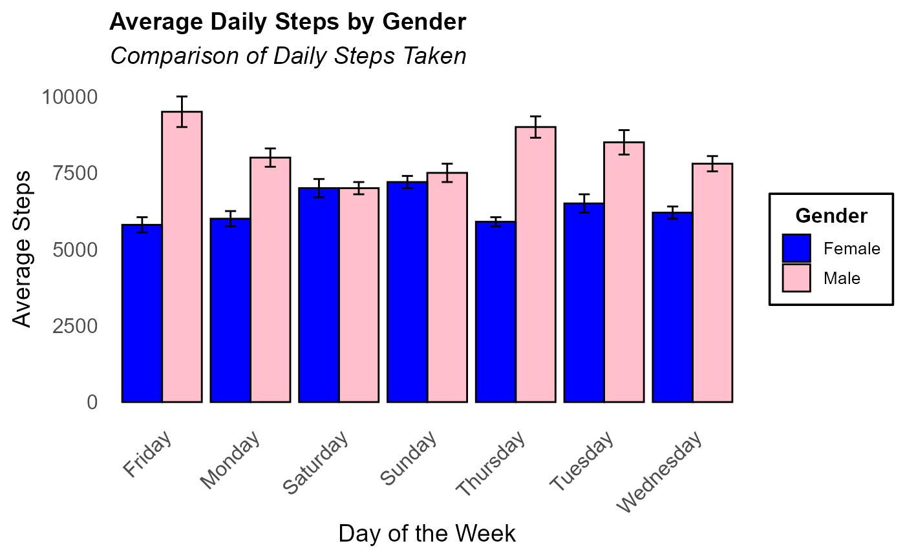
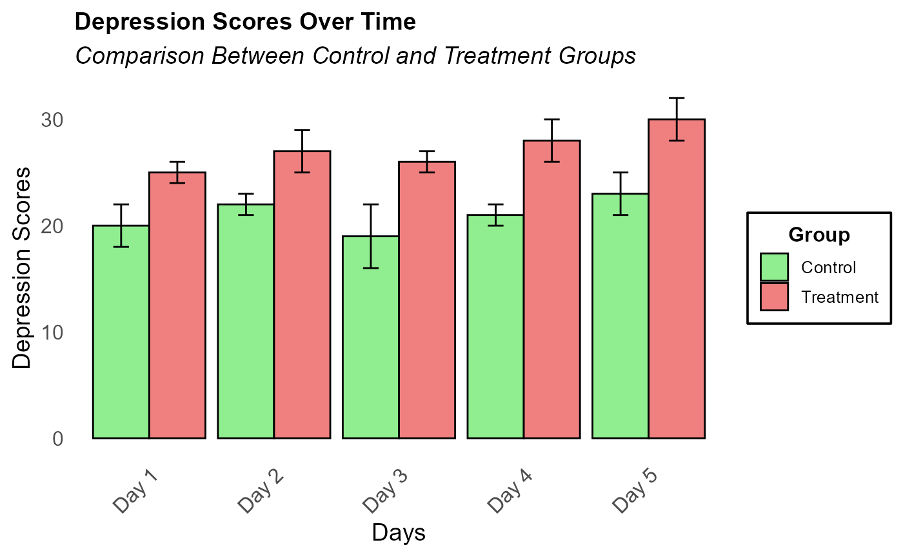
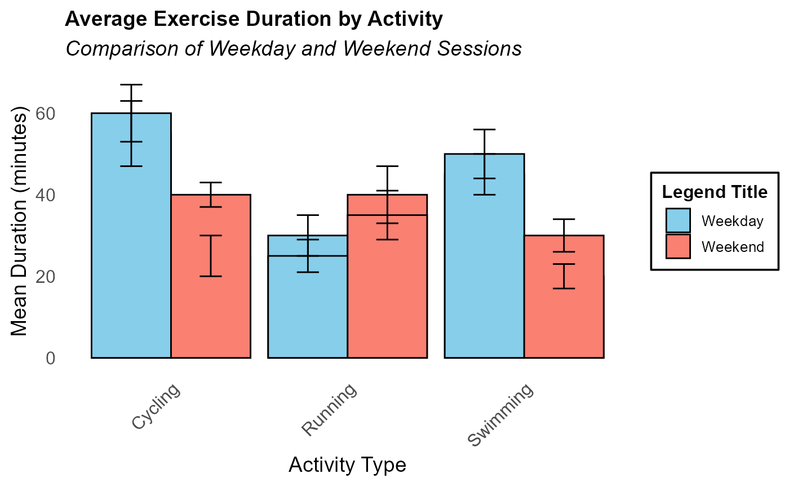

Create APA-Style Bar Graph
apa_bar.RdCreates an APA-style bar graph with optional error bars, customizable titles, labels, and a boxed legend title.
Usage
apa_bar(
data,
x_var,
y_var,
group_var = NULL,
facet_var = NULL,
error_var = NULL,
title = "Title",
subtitle = "Subtitle",
x_label = "X-axis Label",
y_label = "Y-axis Label",
legend_title = "Legend Title",
tick_labels = NULL,
bar_color = "skyblue",
save_as = NULL
)Arguments
- data
A data frame containing the variables to be visualized.
- x_var
A character string naming the categorical variable for the x-axis.
- y_var
A character string naming the numeric variable for the y-axis.
- group_var
A character string naming the variable to group bars by (optional).
- facet_var
A character string naming the variable for faceting (optional).
- error_var
A character string naming the variable for error values (optional).
- title
A string for the plot title.
- subtitle
A string for the plot subtitle.
- x_label
A string for the x-axis label.
- y_label
A string for the y-axis label.
- legend_title
A string for the legend title.
- tick_labels
A vector of custom labels for x-axis ticks (optional).
- bar_color
A vector specifying colors for the bars (default is "skyblue").
- save_as
A string specifying the file name to save the plot (optional).
Examples
# Example 1: Sample data for average daily steps
example_data1 <- data.frame(
Gender = rep(c("Male", "Female"), each = 7),
Day = rep(c("Monday", "Tuesday", "Wednesday", "Thursday", "Friday", "Saturday", "Sunday"), times = 2),
Average_Steps = c(8000, 8500, 7800, 9000, 9500, 7000, 7500, 6000, 6500, 6200, 5900, 5800, 7000, 7200),
Error = c(300, 400, 250, 350, 500, 200, 300, 250, 300, 200, 150, 250, 300, 200) # Example error values
)
# Create the grouped bar graph with error bars
apa_bar(
data = example_data1,
x_var = "Day",
y_var = "Average_Steps",
group_var = "Gender",
error_var = "Error",
title = "Average Daily Steps by Gender",
subtitle = "Comparison of Daily Steps Taken",
x_label = "Day of the Week",
y_label = "Average Steps",
bar_color = c("pink", "blue"), # Blue for Male and Pink for Female
legend_title = "Gender" # Adding legend title
)

# Example 2: Sample data for depression scores by treatment groups
example_data2 <- data.frame(
Group = rep(c("Control", "Treatment"), each = 5),
Time = rep(c("Day 1", "Day 2", "Day 3", "Day 4", "Day 5"), times = 2),
Depression_Scores = c(20, 22, 19, 21, 23, 25, 27, 26, 28, 30),
Error_Values = c(2, 1, 3, 1, 2, 1, 2, 1, 2, 2) # Example error values
)
# Create the grouped bar graph with error bars, bold title, and italic subtitle
apa_bar(
data = example_data2,
x_var = "Time",
y_var = "Depression_Scores",
group_var = "Group",
error_var = "Error_Values", # Specify the error variable
title = "Depression Scores Over Time",
subtitle = "Comparison Between Control and Treatment Groups",
x_label = "Days",
y_label = "Depression Scores",
bar_color = c("lightgreen", "lightcoral"), # Custom colors for groups
legend_title = "Group" # Adding legend title
)

## Example 3: Imbalanced Scenario
example_imbalanced <- data.frame(
Activity = rep(c("Running", "Swimming", "Cycling"), each = 4),
Session_Type = rep(c("Weekday", "Weekend"), times = 6),
Mean_Duration = c(30, 40, 25, 35, 45, 20, 50, 30, 55, 25, 60, 40),
Error_Value = c(5, 7, 4, 6, 5, 3, 6, 4, 8, 5, 7, 3) # Example error values
)
# Create the grouped bar graph with error bars
apa_bar(
data = example_imbalanced,
x_var = "Activity",
y_var = "Mean_Duration",
group_var = "Session_Type",
error_var = "Error_Value", # Specify the error variable
title = "Average Exercise Duration by Activity",
subtitle = "Comparison of Weekday and Weekend Sessions",
x_label = "Activity Type",
y_label = "Mean Duration (minutes)",
bar_color = c("skyblue", "salmon") # Different custom colors for groups
)

# Note: This example illustrates an imbalanced design, which may result in misleading visual representations.